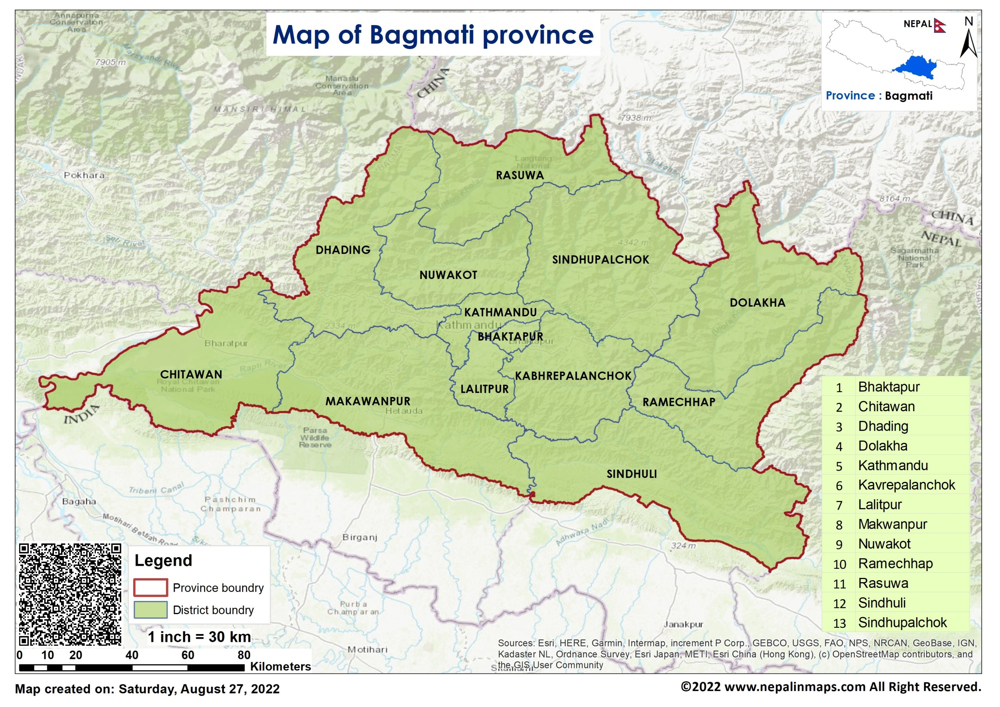

Map

Bagmati Province is one of the seven provinces of Nepal established by the constitution of Nepal. Bagmati is Nepal's foremost populous province and fifth largest province by area. It is bordered by Tibet Autonomous Region of China to the north, Gandaki Province to the west, Koshi Province to the east, Madhesh Province and the Indian state of Bihar to the south. With Hetauda as its provincial headquarters, the province is also the home to the country's capital Kathmandu, is mostly hilly and mountainous, and hosts mountain peaks including Gaurishankar, Langtang, Jugal, and Ganesh.
Being the most populous province of Nepal, it possesses rich cultural diversity with resident communities and castes including Thami (Thangmi), Newar, Tamang, Sherpa, Tharu, Chepang, Jirel, Brahmin, Chhetri, and more. It hosted the highest number of voters in the 2017 election for the House of Representatives and Provincial Assembly.